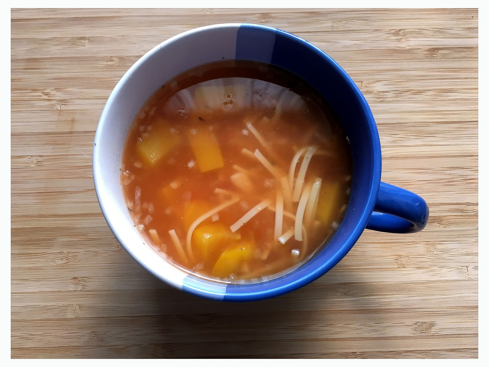

Coffee Poutine

This here. This here is a cup of soft salty goodness. Perfect for that mouthguard mouthfeel.
Have you ever taken a mouthful out of of a baked russet potato and thought
to yourself "Why, this sure could use some sort of salty lubricant"? Thats what we are here for.
Applying that lubricant. Salting that potato. Filling you up.
Ingredients
- Fries
- Mug
- Hot Coffee
- Cheese Curds
- Salt
Steps
- We won't ask you how you obtained your fries and your mug. And we claim no responsibility
for whatever terrible deeds you had to commit in order to obtain these prized ingredients. We also do not know
how you decided to carry these ingredients and will not reimburse you for your ruined jacket pockets. All we ask is that you place the fries in the mug.
- And then salt those fries to your tasting. Did you buy pre salted fries? Too bad. Salt them.
- Toss some cheese curds on top of those fries.
- Douse your chewy beverage in hot coffee.
- Watch the curds melt and the fries sponge.
- Sip it knowing this is how beverages were meant to be.